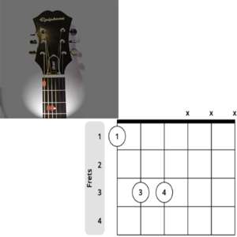
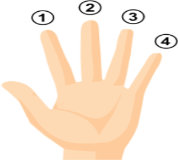

Help Box
Hello, you can call this help box at any time, by saying, "What to say."
Below are a list of command's that you can say to go anywhere within this website - Have
fun.
| What to say | What happens |
|---|---|
| Scroll Up | Scroll's the page up |
| Scroll Down | Scroll's the page down |
| Go to the Top | Takes you to the top of the page |
| Go to the bottom | Takes you to the bottom of the page |
| Go forward | Goes forward a previously visited page |
| Go backwards | returns to the previously visited page |
| Home | Takes you to the Home Page |
| Open Basics | Takes you to the first Basics Lesson |
| Open Second Basics Lesson | Takes you to the second Basics Lesson |
| Open Fret's | Takes you to the first Frets Lesson |
| Finger positioning | Takes you to the second Fret's lesson on Finger positioning. |
| Open Chords | Takes you to the Chords Lesson |
| The Power Chord | Takes you to the second Chord's Lesson on Power Chords |
| Open Rhythm | Takes you to the Rhythm Guitar Lesson |
| First music lesson | Takes you to the second Rhythm Guitar Lesson, where you will learn a song |
| Open Lead | Takes you to the Lead Guitar Lesson |
| Reading music | Takes you to the second Lead Guitar Lesson, where you will learn how to read music |
A Rocky Blues Lesson
When you have had enough practice in keeping time, you might find that adding a downward
strum to every beat becomes a little tedious, more often than not, songs tend to add half
beats between main beats and this is were the upwards strum come's into play. So far we have
worked out that we count in 4 second beats and for each beat we strum downwards.
The extra beat usually follows the third beat and can be tricky to master especially with
chord changes. One way to overcome this is to count out loud at first, " 1, 2, 3, and 4."
Saying the word, "and, " will remind you to include the upwards strum.
For all voice
commands for this website, just say, "What to say" at any time to open the Help
Box.
Putting It All Together.
You should by now have learned how to hold the guitar, where to position your fingers whilst playing a chord and hopefully how to strum in time too. So now is the time to learn a basic song to start you playing the Rhythm guitar.
Jimmy Hendrix
One of the most influential artist of all times, is Jimmy Hendrix. In addition to playing with his teeth, behind his back, or without touching the instrument’s strings, he also played his guitar upside down, although there was a very simple reason for that, he was left-handed. Most of his songs were created using the Power Chord. His version of, "All Along the Watchtower," is hailed as a masterpiece, using just one of the Power Chords from this tutorial and a strum pattern already explained, its time for a lesson.
The Chords

This Power Chord was explained in a previous section of this web site, it is the
simplest chord to learn and with enough practice will power drive your way into
mastering this song and many more to come too! The chord diagram on the left explains
clearly were you should place your finger tips and also, if you remember from a previous
tutorial, which fingers tips go where.
Don't worry if you have forgotten which
number belongs to which finger, the hand diagram, displayed lower, clearly identifies
where each finger goes with its respectful number. On the chord diagram the dots
represent where you should fret the board along with each corresponding finger number.
Finger Numbers

The Power Chord above is called the F-Power Chord and the actual shape will not change
all of the way through this song, sometimes keeping it simple is the best way to learn
anything in life. Practice this chord before starting the lesson, sometimes a beginner
may not be fretting the string hard enough, the easiest way to find out if you are
playing it correctly is simply by listening. Play each string with your plectrum, is
each string playing the right sound?
If you find that some or even all of the strings are making the wrong sound, for
example, a slight buzzing sound or if the sound is muted then press harder on the
strings and repeat until each string sounds correct.
Once you are confident in
playing this chord on different frets, each note is sounding as it should then you are
ready for the lesson.
The Lesson
The chords for this song are the same all of the way through, except they're on
different frets.
It is worth remembering that a beat is 1 downwards strum every
second. The first being on the 9th fret for 4 beats (4 down strums), then the 7th fret
for 2 beats (2 down strums), up to the 5th fret for 4 beats then back onto the 7th fret
for 4 beats - that's it!
A really simple song with a powerful sound. Below is a
table which explains things better, giving the chord name, the fret number and what each
chord is called - just using the chord shown above.
It will take a lot of practice, if you are a complete beginner be sure to expect
some wrist pain and your finger tip's becoming dry and sore-this is completely normal
and it will disappear after a week or two of playing your guitar. Remember that you are
making wrist and hand movements you have never done before, it will pass after a short
while, remember to rest when you need to and keep practicing.
Sometimes you will
want to quit playing the guitar, but if you don't - Then you will surely be rewarded
| Chords | Fret | Beats/Strums |
|---|---|---|
| C# | 9 | 4 |
| B | 7 | 2 |
| A | 5 | 4 |
| B | 7 | 4 |